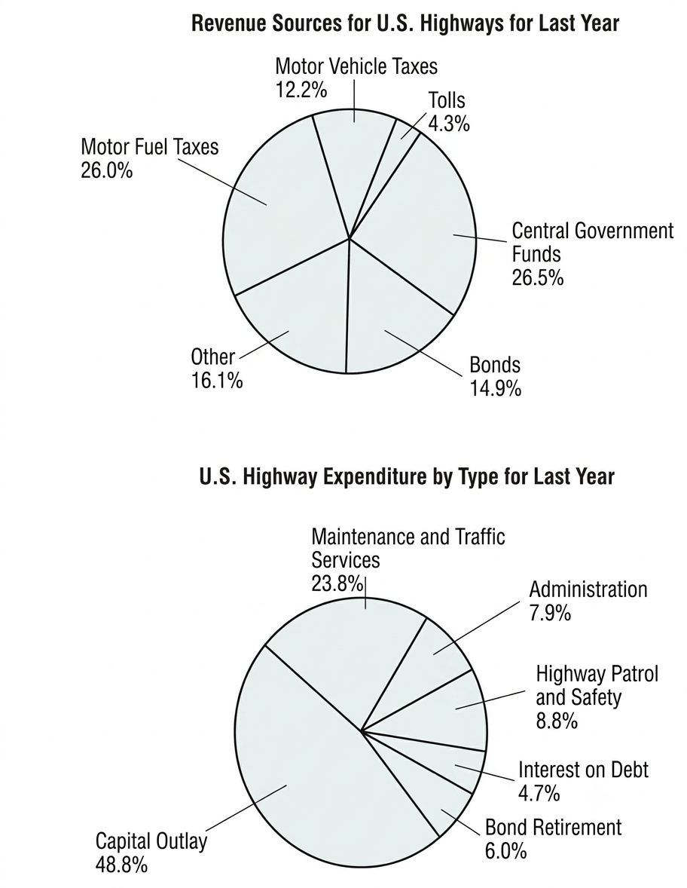

Writing Task 1
You should spend about 20 minutes on this task.
The pie charts below show the revenue sources for U.S. highways for last year and U.S. highway expenditure by type for last year.
Summarise the information by selecting and reporting the main features, and make comparisons where relevant.
You should write at least 150 words.

Your Answer
Word count: 0